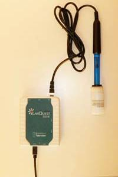

Προκειμένου να μετρήσετε με ακρίβεια το pH θα χρειαστείτε ένα πεχάμετρο. Το πεχάμετρο περιέχει ειδικά ηλεκτρόδια τα οποία είναι ενωμένα με ηλεκτρονικό εξοπλισμό – ένα μετρητή που προβάλλει την ένδειξη του pH. Μόλις ανακαλυφθήκαν τα πεχάμετρα χρησιμοποιούνταν μόνο σε εργαστήρια. Στις μέρες μας ο αισθητήρας του pH μπορεί να ενωθεί με το φορητό υπολογιστή και οι μετρήσεις μπορούν να παρθούν επιτόπου ούτως ώστε να αποφεύγεται η μεταφορά των δειγμάτων στο εργαστήριο.

Ένα αισθητήρας pHσυνδεδεμένος με ναι συσκευή αποστολής σημάτων.